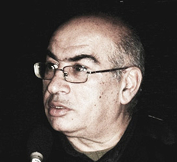

ЖЕНЕВСКАЯ КОНФЕРЕНЦИЯ ПО ЮЖНОМУ
В прошлую неделю я вернулся из Швейцарии, куда был приглашен тамошней организацией CİMERA для участия в конференции «Новая геополитическая ситуация и роль дипломатии на Кавказе». Там выступил с докладом «Решение кавказских конфликтов в принципах Семиотической аномалии».
Несомненно, туда собрались умные люди. Поэтому, несмотря на то, что половина из участников были армяне, идеологических докладов я там почти не слышал, также как не было упреков в азербайджанский адрес. Исключение составили два или три реплик.
Запомнился Теван Погосян, который в беседе с экс-советником экс-президента Тер-Петросяна Жирайром Либаридьяном сказал, что посмотрев передачи азербайджанского АзТВ, армяне часто видят, что азербайджанцы мечтают очистить Карабах от армянского населения…После этого, как они могут верит на гарантии азербайджанцев?!
Тогда мне пришлось заметить, что подобные сцены для нашего ТВ не типичны, и возможно, очистить Карабах от армян желают те, кто потерял в войне близких. То есть такие выступления - аффективные проявления душевной боли, или приступы «ура патриотизма», что встречается и у вас. Если Гейдар Алиев и его сын заявляли, что готовы признать в Нагорном Карабахе самую высокую степень автономии, это значит, что в серьезной азербайджанской политике не представляют Карабах без армянского населения. Еще и добавил: все нормальные оппозиционные азербайджанские партии также согласны с приданием Карабаху автономии, в которой все нации смогут пользоваться всеми Правами Человека.
ЕЩЕ РАЗ О ПРАВЕ НАРОДОВ
В другом выступление докладчик – Сюзанна Василян, напомнила собравшимся о праве наций на самоопределение, имея конечно в виду Нагорный Карабах. В это время я дал реплику, что недавно мы в Тбилиси проводили Символический Кавказский Суд о праве самоопределения. Оппонентом истца Гюнель Гулиевой был Ваге Аветян. Гюнель объяснила, что неправильно понимать право народов на самоопределение только как право на сепаратизм, ведущий к созданию другого государства. Одним из вариантов такого права может быть возможность реализации всех прав нацменьшинства в рамках единой, неделимой страны. Я не стал подчеркивать, что тот суд Гюнель выиграла. Так как поддержка грузинской публики позиции Гюнеля была естественной, в силу общих проблем с сепаратизмом.
Кстати, после беседы с Гюнель, я понял, что распространенный азербайджанский тезис о том, что армяне однажды получили возможность создать свое государство и больше им такой возможности давать нельзя, является неверным, с точки зрения международного права. Жаль, что этот тезис я недавно вновь услышал из уст официальных людей.
Австрия является государством немецкоязычных, Австралия и США – страны англоязычных, и во всех были акции за суверенитет. В этом смысле если армяне Карабаха станут называть себя «арцахцами», то наш аргумент потеряет свою остроту. Другое дело неаднократное высказывание азербайджанского президента – не может же каждая большая (или меньшая) община претендовать на право на самоопределение!
Мне было интересно наблюдать спор между Погосяном и Либаридъяном, причем последний доказывал, что право наций на самоопределение реализуемо и без нарушения принципа территориальной целостности. К примеру, как Квебек в Канаде. В ответ Погосян с иронией заметил: Азербайджан не Канада. Но ирония в этом случае не может быть сильным аргументом.
Есть у нас люди, вернувшись с международной конференции, хвалятся тем, что «высказали сильные аргументы в присутствии армянских участником». Не хочу быть похожим на них. В сравнении с совершенным английским языком остальных участников, мой английский не позволял мне играть семантическими нюансами и тонкостями. Пришлось ограничиться схематически высказываниями нескольких идей.
Вот первый из них: на Кавказе виртуализация конфликтов может быть одним из методов их решения. Затем попытался раскрыть смысл термина «виртуализация».
Вторая идея: обыденное, да и научное сознание считает, что наличие проблемы обязательно предполагает ее окончательного решения. Но, мне кажется, есть конфликтные проблемы, которые должны решаться постоянно, поэтому их можно назвать вечно решаемыми проблемами. Проблемы между расами в США, басками в Испании являются такими и потому государствами решаются «вечно». Так и на Кавказе. В Грузии и Азербайджане реализация прав национальных меньшинств должна решаться постоянно и ежедневно. В нашем случае проблема армянского меньшинства такая же.
А ТЕПЕРЬ ИЗ СКАЗАННОГО
Жерайр Либаридъян: Я проводил семинары в Баку, Ереване, Тбилиси, Тегеране, Турции. И всегда участники считали, что они нормальные, а соседи анормальные.
Спросил участников карабахского конфликта: чем является для вас Карабах? Оказалось: для одних это территория, для других этническое понятие.
Участники карабахского конфликта знают, что хотят максимально, но не знают, чего им нужно минимально.
Миклош Фарби: Признание Косово является исключением, не может быть прецедентом (is exceptional, but not precedential).
Оксана Антоненко: Во время правления Обамы США и Россия в разрешении проблем вышли из ситуации нулевой модели сотрудничества. Это можно видеть на примере Украины и Кыргызстана.
В современной российской политике появилась апатия к Кавказским проблемам. О ней говорят «постольку-поскольку».
В настоящее время Россия в карабахской политике безынициативна. Все делается ради имитации, а на самом деле ничего не происходит. Иногда Медведев хочет показать, что в Грузии русские, возможно, поступили не так как было бы лучще, но смотрите, как мы позитивны в Карабахской проблеме.
Питер Семнеби: Закрытые границы на Южном Кавказе являются для нас фундаментальной проблемой, так как они сами создают конфликты. Ведь рождаются новые поколения, которые живя в закрытых странах, воспитываются в психологии вражды к соседям.
Викен Четерян: Азербайджан надеется на свои углеродные ресурсы, а Армения – на диаспору.
Первый президент независимой Армении, выходец из диаспоры Левон Тер-Петросян настаивал на том, чтобы внешняя политика Армении формировалась не в диаспоре, а в Ереване.
Теван Погосян: Если вновь начнется война, это будет не стрельба из автоматов, а полеты ракет и бомбардировщиков. Нетрудно представить, к чему это приведет.
Ниязи Мехти
Kultura.Az
21-05-2010


МЫ И АРМЯНЕ - ВАРИАНТ ВЕЧНО РЕШАЕМОЙ ПРОБЛЕМЫ
ЖЕНЕВСКАЯ КОНФЕРЕНЦИЯ ПО ЮЖНОМУ
КАВКАЗУ
В прошлую неделю я вернулся из Швейцарии, куда был приглашен тамошней организацией CİMERA для участия в конференции «Новая геополитическая ситуация и роль дипломатии на Кавказе». Там выступил с докладом «Решение кавказских конфликтов в принципах Семиотической аномалии».
Несомненно, туда собрались умные люди. Поэтому, несмотря на то, что половина из участников были армяне, идеологических докладов я там почти не слышал, также как не было упреков в азербайджанский адрес. Исключение составили два или три реплик.
КУЛУАРНОЕ ИСКЛЮЧЕНИЕ
Запомнился Теван Погосян, который в беседе с экс-советником экс-президента Тер-Петросяна Жирайром Либаридьяном сказал, что посмотрев передачи азербайджанского АзТВ, армяне часто видят, что азербайджанцы мечтают очистить Карабах от армянского населения…После этого, как они могут верит на гарантии азербайджанцев?!
Тогда мне пришлось заметить, что подобные сцены для нашего ТВ не типичны, и возможно, очистить Карабах от армян желают те, кто потерял в войне близких. То есть такие выступления - аффективные проявления душевной боли, или приступы «ура патриотизма», что встречается и у вас. Если Гейдар Алиев и его сын заявляли, что готовы признать в Нагорном Карабахе самую высокую степень автономии, это значит, что в серьезной азербайджанской политике не представляют Карабах без армянского населения. Еще и добавил: все нормальные оппозиционные азербайджанские партии также согласны с приданием Карабаху автономии, в которой все нации смогут пользоваться всеми Правами Человека.
ЕЩЕ РАЗ О ПРАВЕ НАРОДОВ
НА САМООПРЕДЕЛЕНИЕ
В другом выступление докладчик – Сюзанна Василян, напомнила собравшимся о праве наций на самоопределение, имея конечно в виду Нагорный Карабах. В это время я дал реплику, что недавно мы в Тбилиси проводили Символический Кавказский Суд о праве самоопределения. Оппонентом истца Гюнель Гулиевой был Ваге Аветян. Гюнель объяснила, что неправильно понимать право народов на самоопределение только как право на сепаратизм, ведущий к созданию другого государства. Одним из вариантов такого права может быть возможность реализации всех прав нацменьшинства в рамках единой, неделимой страны. Я не стал подчеркивать, что тот суд Гюнель выиграла. Так как поддержка грузинской публики позиции Гюнеля была естественной, в силу общих проблем с сепаратизмом.
СЛАБОСТЬ НАШИХ АРГУМЕНТОВ ПРОТИВ СЕПАРАТИЗМА
Кстати, после беседы с Гюнель, я понял, что распространенный азербайджанский тезис о том, что армяне однажды получили возможность создать свое государство и больше им такой возможности давать нельзя, является неверным, с точки зрения международного права. Жаль, что этот тезис я недавно вновь услышал из уст официальных людей.
Австрия является государством немецкоязычных, Австралия и США – страны англоязычных, и во всех были акции за суверенитет. В этом смысле если армяне Карабаха станут называть себя «арцахцами», то наш аргумент потеряет свою остроту. Другое дело неаднократное высказывание азербайджанского президента – не может же каждая большая (или меньшая) община претендовать на право на самоопределение!
Мне было интересно наблюдать спор между Погосяном и Либаридъяном, причем последний доказывал, что право наций на самоопределение реализуемо и без нарушения принципа территориальной целостности. К примеру, как Квебек в Канаде. В ответ Погосян с иронией заметил: Азербайджан не Канада. Но ирония в этом случае не может быть сильным аргументом.
ВОЗМОЖНО И ТАКОЕ РЕШЕНИЕ КОНФЛИКТОВ
Есть у нас люди, вернувшись с международной конференции, хвалятся тем, что «высказали сильные аргументы в присутствии армянских участником». Не хочу быть похожим на них. В сравнении с совершенным английским языком остальных участников, мой английский не позволял мне играть семантическими нюансами и тонкостями. Пришлось ограничиться схематически высказываниями нескольких идей.
Вот первый из них: на Кавказе виртуализация конфликтов может быть одним из методов их решения. Затем попытался раскрыть смысл термина «виртуализация».
Вторая идея: обыденное, да и научное сознание считает, что наличие проблемы обязательно предполагает ее окончательного решения. Но, мне кажется, есть конфликтные проблемы, которые должны решаться постоянно, поэтому их можно назвать вечно решаемыми проблемами. Проблемы между расами в США, басками в Испании являются такими и потому государствами решаются «вечно». Так и на Кавказе. В Грузии и Азербайджане реализация прав национальных меньшинств должна решаться постоянно и ежедневно. В нашем случае проблема армянского меньшинства такая же.
А ТЕПЕРЬ ИЗ СКАЗАННОГО
НА КОНФЕРЕНЦИИ
Жерайр Либаридъян: Я проводил семинары в Баку, Ереване, Тбилиси, Тегеране, Турции. И всегда участники считали, что они нормальные, а соседи анормальные.
Спросил участников карабахского конфликта: чем является для вас Карабах? Оказалось: для одних это территория, для других этническое понятие.
Участники карабахского конфликта знают, что хотят максимально, но не знают, чего им нужно минимально.
Миклош Фарби: Признание Косово является исключением, не может быть прецедентом (is exceptional, but not precedential).
Оксана Антоненко: Во время правления Обамы США и Россия в разрешении проблем вышли из ситуации нулевой модели сотрудничества. Это можно видеть на примере Украины и Кыргызстана.
В современной российской политике появилась апатия к Кавказским проблемам. О ней говорят «постольку-поскольку».
В настоящее время Россия в карабахской политике безынициативна. Все делается ради имитации, а на самом деле ничего не происходит. Иногда Медведев хочет показать, что в Грузии русские, возможно, поступили не так как было бы лучще, но смотрите, как мы позитивны в Карабахской проблеме.
Питер Семнеби: Закрытые границы на Южном Кавказе являются для нас фундаментальной проблемой, так как они сами создают конфликты. Ведь рождаются новые поколения, которые живя в закрытых странах, воспитываются в психологии вражды к соседям.
Викен Четерян: Азербайджан надеется на свои углеродные ресурсы, а Армения – на диаспору.
Первый президент независимой Армении, выходец из диаспоры Левон Тер-Петросян настаивал на том, чтобы внешняя политика Армении формировалась не в диаспоре, а в Ереване.
Теван Погосян: Если вновь начнется война, это будет не стрельба из автоматов, а полеты ракет и бомбардировщиков. Нетрудно представить, к чему это приведет.
Ниязи Мехти
Kultura.Az
21-05-2010
Кавказский Центр Миротворческих Инициатив
© Ассоциация Текали - info@southcaucasus.com